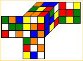

First 2 Layers: Examples
I will first ask you to scramble the cube according to the given scrambling move below and then I show three different
ways how to do the initial cross. Each alternative for the cross leads to a different situation for the four
corner-edge pairs. I go through all three possibilities showing you different little tricks along the way.
Hold the cube with the first layer down and front face orange.
Here is the scrambling algorithm: F R2 D F R B2 L2 U F B R L' B' U2 R'
If you carried out the moves correctly, you should see this assuming your cube coloring is the
same as mine (I have white against yellow):

- Cross Option I: B L' F' D L D L'
Now you have three equally good choices for the first corner-edge pair. You can ...
- 1. ... go for BRD (Back Right Down) corner: F U2 F' U B U B' and then ...
- do the RFD corner : U R U' R' F' U2 F and then use a little non-standard but useful and simple approach ... do D' U L U' L' and D2 U' F U F' D'
- This choice of F2L is special because it leaves you (luckily) with just a three-cycle of edges for the LL (41 moves total for the whole cube). This example
is useful in many respects. First, because nothing but the cross is solved in the beginning, you can do the BRD corner right away without the auxiliary U2
move to get the pair into the position No. 16 as depicted on my F2L page. Furthermore, note that in order to do the third
corner-edge pair the way shown here, you need to recognize that the corner and the edge (that does not belong to it), are in fact in the position No. 11
on my F2L page. Seeing this requires some practice. Finally, I fully acknowledge that you could do the last two corner pairs differently in a more standard
manner and it would be a good approach as well.
- or, after the cross, you can choose a different approach and ...
- 2. ... go for the BLD corner first: R' U R U L U L'. At this point, you have equally good choice to go for any of the three corner-edge pairs.
- For example, you can do the the FRD corner : F' U' F U' R U R' and then ...
- do the rest: B U B' U B U' B' and U' F U2 F2 L F L'
- or, after the cross, you can choose this sequence:
- 3. Go for the FRD corner first: U F' U' F U' R U R'
- Then you can go for BRD or BLD: B' U' B U' R' U R and then ...
- ... do the rest: L' U' L2 F' L' F and U2 B' U' B U' L U L'.
- Cross Option II: F' B L U' F2 D B
- 1. go for the LFD corner: F' U F U' L' U L, again you can do this because no pairs are positioned yet.
- The next natural choice is the RBD corner: R2 B' R2 B and then standard algorithms from my F2L page.
- or, after the cross, you can choose this sequence:
- 2. do the RBD corner first: F' B U' B' and ...
- ... continue with: U2 F U2 L' U2 L and then finish with standard moves.
- or, after the cross, you can choose this sequence:
- 3. Do the RFD corner first: L' U2 L U2 F' U' F. Again, we are using the fact that none of the pairs are positioned, thus saving moves.
- Then the RBD corner: U F U F' U' R' U' R and ...
- ... continue with: D L' U2 L D' and finish with standard moves.
- Cross Option III: U2 B L' D' F' L D2
- 1. go for the BRD pair: B U2 B' and ...
- ... continue with the BLD corner: R U2 R' U L U L' and ...
- ... finish with: R U' R' U R U R' (which is a fast two-face move) and U2 L' U L U2 F U F'.
This is all for now. I wish you all good luck getting sub-20!